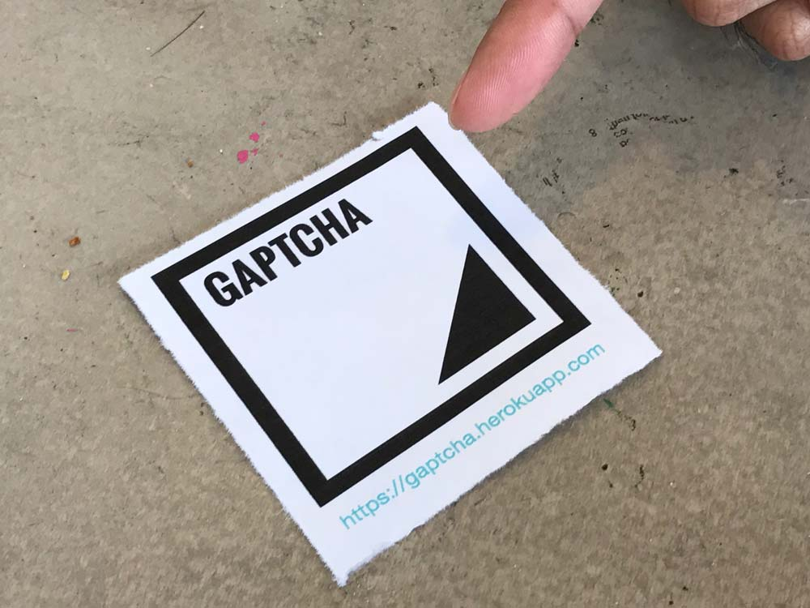
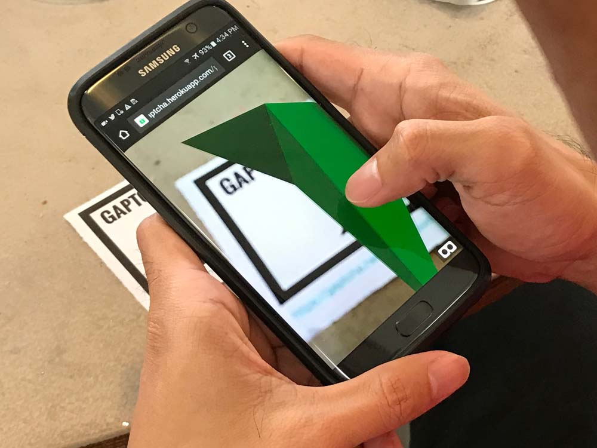
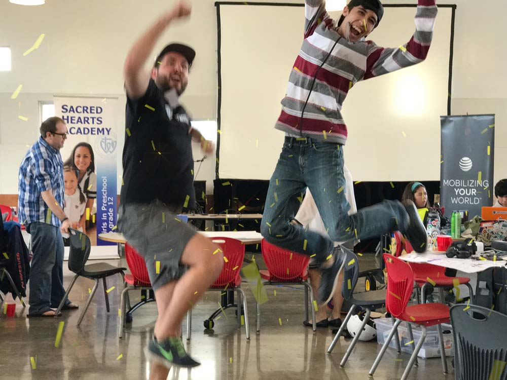

GAPTCHA
An augmented reality scavenger hunt. Scan printed markers to get arrows toward a hidden checkpoint, follow where the arrows cross, then check whether you found it.
Demo: playing itself, and the other hunters are simulated. Open gaptcha.joekarlsson.com on your phone to hunt for real.



How it works
Print a marker and stick it somewhere. Scan it with your phone and an arrow appears on it, pointing toward a hidden checkpoint. Scan from a few different spots, follow where the arrows cross, and find the checkpoint.
The original checkpoint is in Honolulu, where we built this. Anywhere else, GAPTCHA hides a checkpoint 100 to 300 meters from you the first time you scan.

Did I win?
If you think you’re standing on the hidden checkpoint, tap the button. You need to be within 20 meters.
Live scans
The 2017 version streamed every scan to AT&T M2X, which shut down in 2021. Now your scans stay in this browser and show up here, next to the other hunters.
Other hunters are simulated in this demo.
Like what you see?
Sean Nakamura, Tony Gaskell, Brandon Baris, Joelle Torneros and Joe Karlsson from DevLeague built GAPTCHA for the 2017 AT&T hackathon. The code is open source.